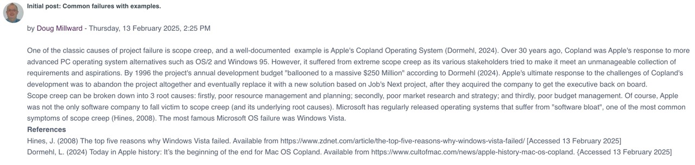
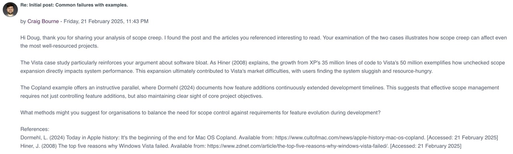

Unit 3: Estimating, Planning and Risk
In unit 3 we discussed a variety of estimating, planning and risk assessment tools used by project managers.
Required Reading
- Saravanan, T. et al. (2020) Comparative Analysis of Software Life Cycle Models. 2nd International Conference on Advances in Computing, Communication Control and Networking. 906-909.
- Biable, S. E. et al. (2023) 'Proposed Ethical Framework for Software Requirements Engineering', IET Software, 17(4), pp. 526–537.
- Vidoni, M., Codabux, Z. and Fard, F. H. (2022) 'Infinite Technical Debt', The Journal of Systems and Software, 190, pp. 111336.
- Levine, S. et al. (2024) 'Resource-Rational Contractualism: A Triple Theory of Moral Cognition', The Behavioral and Brain Sciences, pp. 1–38.
Unit Work
Collaborative Discussion - Peer Response 2
The third week of the collaborative discussion required us to reflect on and respond to a second peer's initial post, adding comments about possible causes and mitigations. I responded to Doug's post:
 Read the full response here.
Data Structures Reflection
The second task of the unit was to read Wang (2023), think about an online system that I use on a daily basis and reflect on data structures it may have. I decided to write about Spotify and my response can be viewed here.
I thought this task was misplaced from another unit possibly, but I completed it anyway as I am familiar with data structures in several languages.